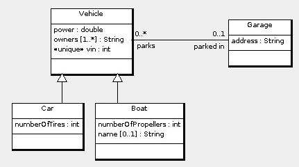

Vehicles may be parked in a garage. Every garage has an address. Some vehicles are cars, and some are boats. Every vehicle has a unique vin (vehicle identification number) and a power rating (in horsepower). A vehicle has at least one owner (known only by name) but may have several. A car has a number of tires. A boat has a number of propellers and may have a name.
Here is the design:

create table Garage(
id int primary key,
address varchar(255) not null
);
create table Vehicle(
id int primary key.
vin int not null unique,
power double not null,
parkedIn int references Garage(id) /* Optional many to one association. */
on update cascade on delete set null
);
create table Car( /* Subclass of Vehicle */
id int primary key references Vehicle(id)
on update cascade on delete cascade,
numberOfTires int not null
);
create table Boat(
id int primary key references Vehicle(id) /* Subclass of Vehicle */
on update cascade on delete cascade,
numberOfPropellers int not null,
name varchar(255) /* Optional boat name */
);
create table VehicleOwner( /* Multi-valued attribute owners of Vehicle */
vehicle int references Vehicle(id) on update cascade on delete cascade,
owner varchar(255),
primary key(vehicle, owner)
);
-- The following is not required:
alter table Vehicle
add foreign key(id) references VehicleOwner(vehicle) on update cascade on delete no action;
© 2009 Ken Baclawski. All rights reserved. Redistribution and use in source and binary forms, with or without modification, are permitted provided that redistributions and uses retain this copyright notice.